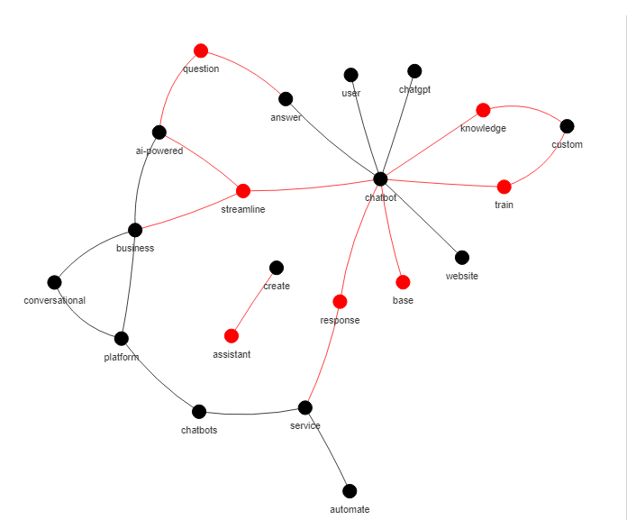
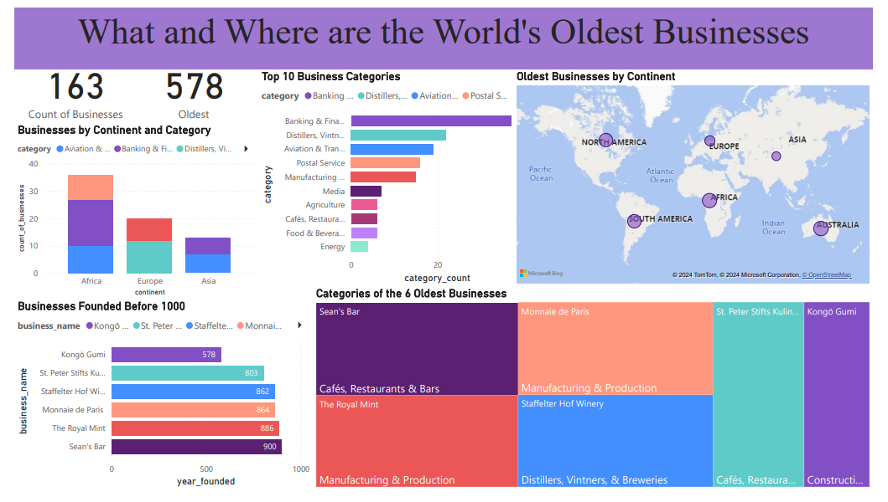

February 11, 2024
In this project, I used chance discovery to assess the novelty of ideas. Chance discovery is all about discovering something new. Its objective is to find chances or breaking events from documents. It produces ideas as well as input into the creative process of identifying business opportunities.

Data exploration of Covid-19 dataset in SQL Server Management Studio.
This project is about cleaning the Nashville Housing Data using queries such as CONVERT, SUBSTRINGS, PARSENAME, CTE, and PARTITION BY.
Large language models offer new opportunities for processing and generating text. I used text embeddings, clustering, and the
ChatGPT API to examine the reasons for startup failure.
In this project, I created a classification model that predicts startup success from data on early-stage investments in the Crunchbase database.

In this project, I explored the data from BusinessFinancing.co.uk on the world's oldest businesses: when were they founded, and which industries do they belong to?
Like many business problems, the data is in several different datasets. I used joins to merge the data. From there, I used manipulation tools such as grouping and filtering to answer questions about these historic businesses. For visualization purposes, I connected the data on SQL Server to PowerBI and used the DAX function to create new columns: category count and count of businesses.
Key Findings
1. The oldest business in the world was founded back in 578. That's pretty incredible that a business has survived for more than a millennium.
2. Six businesses were founded before 1000.
3. The top 6 oldest companies belong to the following categories: construction, cafe, winery, bar, and two belong to the manufacturing and production of currencies.
4. The oldest businesses are in 6 continents: Asia, Europe, North America, South America, Africa, and Oceania.
5. The category with the highest number of businesses is Banking & Finance, with 17 in Africa.